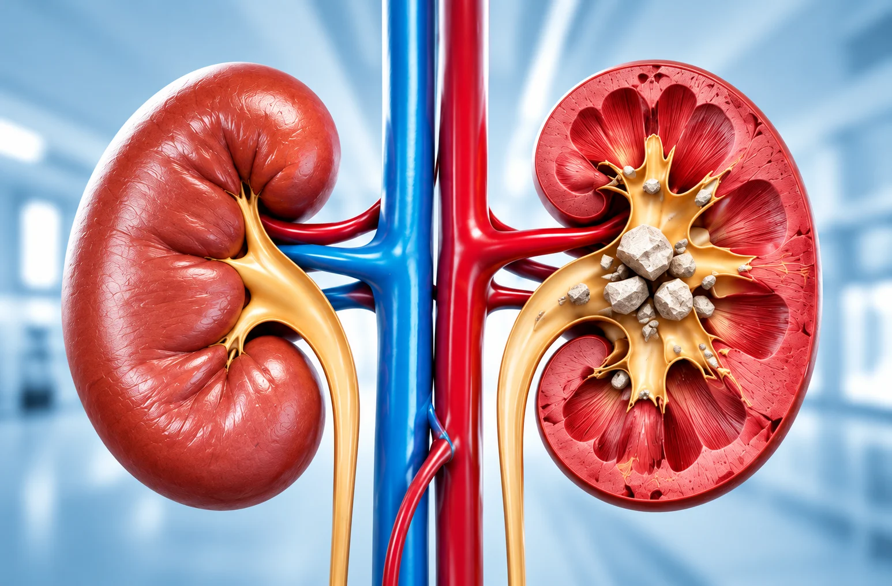
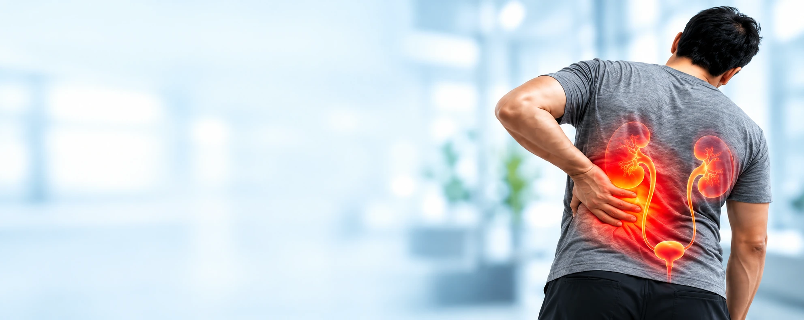

Kidney Stone Treatment
Advanced Treatment
Advanced Treatment
for Kidney Stones
Minimal pain. Faster recovery. Personalised care.
We offer advanced and minimally invasive treatments for all types of kidney stones.
Advanced
Technology
Technology
Minimally Invasive
Procedures
Procedures
Faster
Recovery
Recovery
Personalised
Treatment Plan
Treatment Plan

UnderstandingWhat are
What are
Kidney Stones?
Kidney stones are hard mineral deposits that form in the kidneys due to an imbalance in certain substances in the urine. Stones can vary in size, from a tiny grain to a larger stone, and may cause pain, blockage, or recurrent urinary problems if not treated.
Common Symptoms
Kidney stones may not always cause symptoms. When symptoms occur, they can include:
- Severe pain in the back or side
- Nausea or vomiting
- Pain while passing urine
- Difficulty in urination
- Blood in urine
- Fever (in case of infection)
- Frequent urge to urinate
- Recurring urinary tract infections

Diagnosis & Evaluation


How Kidney Stones Are Diagnosed
A proper evaluation helps determine the size, type and exact location of the stone,
so that the most suitable treatment can be planned.
Medical History
Urine Tests
Blood Tests
Imaging Tests
What to Expect During Treatment
Your care plan depends on the procedure and your individual needs.
Before Treatment
- Medical assessment
- Discuss treatment options
During Procedure
- Procedure-specific care
- Duration varies by treatment
After Treatment
- Recovery instructions
- Guidance on managing discomfort
Follow-up Care
- Check recovery and stone clearance
- Advice to help prevent recurrence
Frequently Asked Questions
Your Questions Answered
Dehydration, excess salt intake, family history, and certain medical conditions can increase the risk of kidney stones.
Recovery depends on the stone size and treatment method. Your urologist will guide you on the expected recovery time.
Common symptoms include back or side pain, painful urination, blood in urine, nausea, and frequent urination.
Treatment depends on the stone’s size, location, and your health. Options include ESWL, RIRS, PCNL, and ureteroscopy.
Yes, kidney stones can recur. Proper hydration, dietary changes, and medical guidance can help reduce the risk.
Drink enough water, reduce excess salt, and follow your doctor’s dietary recommendations.
Pain relief or anaesthesia is used as needed. Some temporary discomfort may occur during recovery.
Coverage depends on your insurance policy, treatment, and hospital. Confirm the details with your insurer before treatment.
Need guidance about kidney stones?
Consult a urologist to understand your condition and the most suitable treatment option.